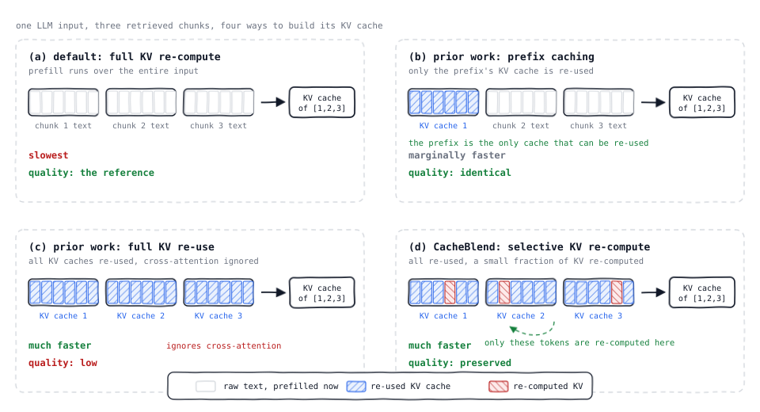
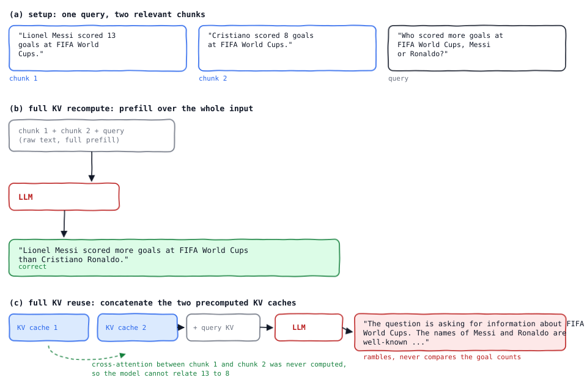
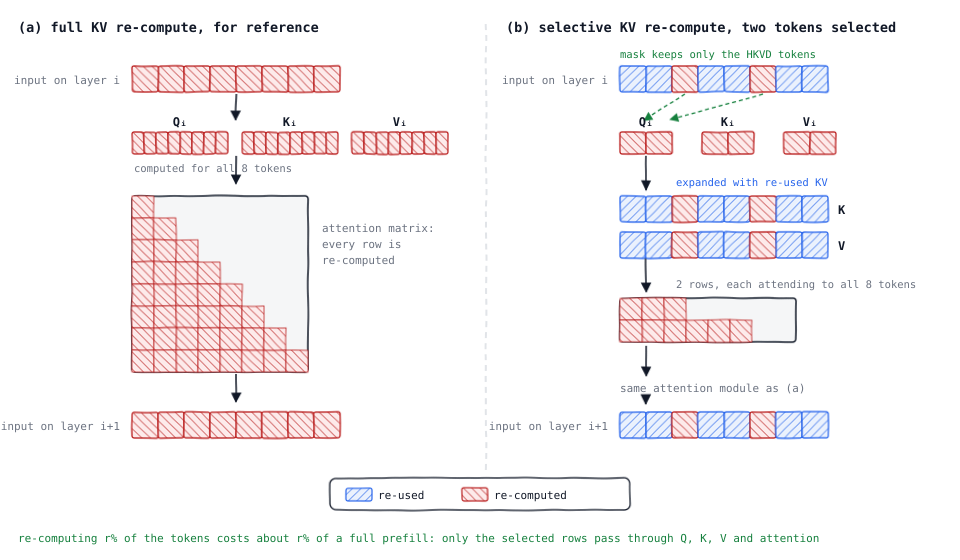
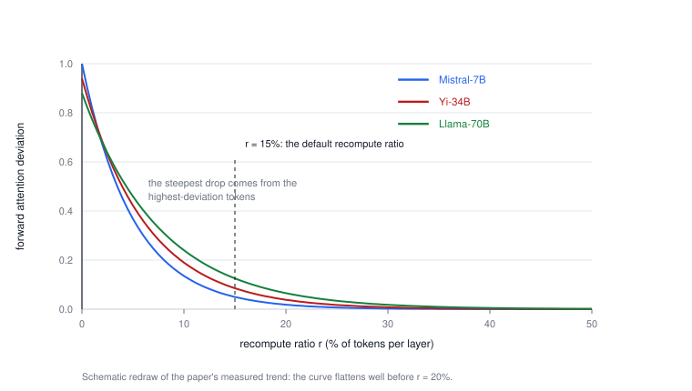
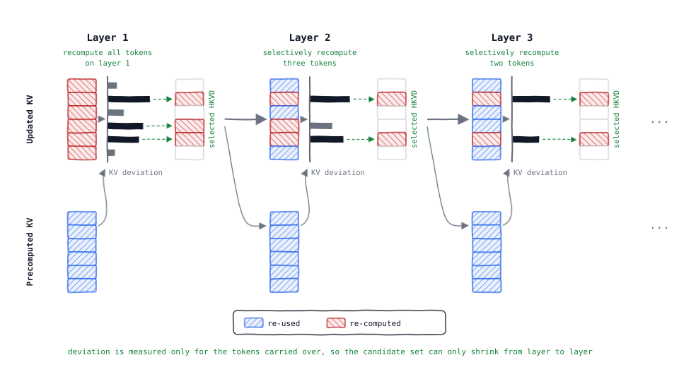
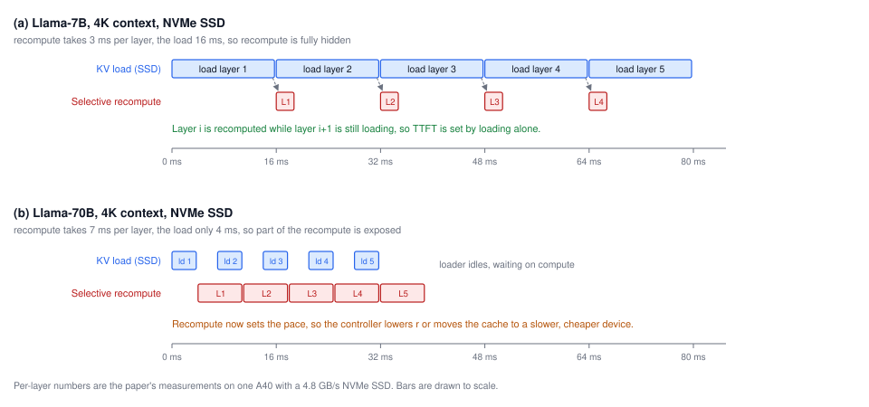
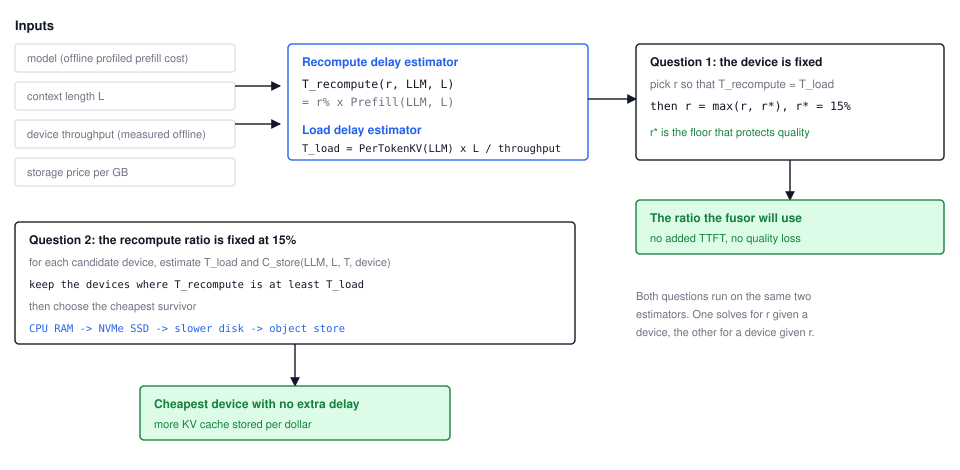
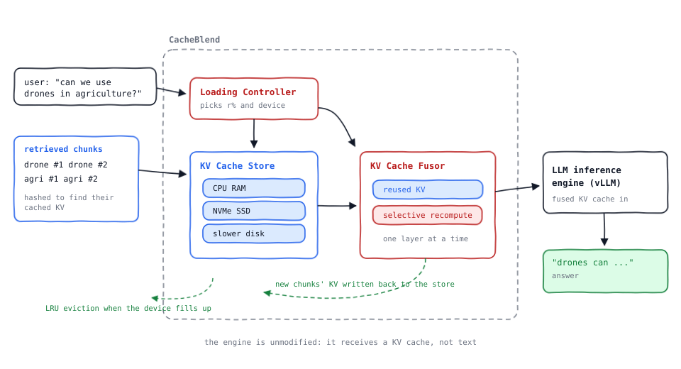
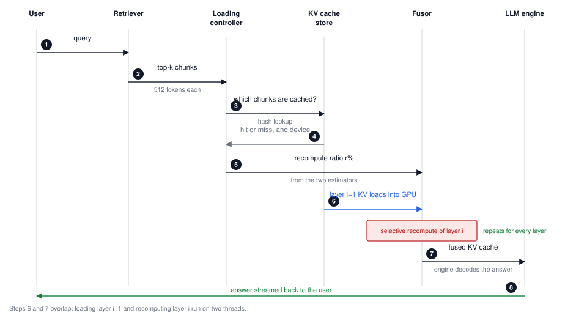

CacheBlend: reusing KV caches for RAG without losing cross-attention
Recomputing about 15% of the tokens per layer buys you the speed of KV reuse and the quality of a full prefill.
14 August 2026
Retrieval-augmented generation has an awkward cost structure. The part of the request people care about, the question, is short. The part that makes the answer correct, the retrieved context, is long. A typical RAG input stuffs six 512-token chunks in front of a question, and the model has to prefill all of it before it can emit a single token.
The obvious fix is to cache. Those chunks come from a fixed corpus and get retrieved again and again, so their KV caches could be computed once and reloaded later. The obvious fix does not work, and the reason is interesting: a chunk's KV cache depends on everything before it in the input. Precompute it in isolation and you have thrown away its cross-attention with the other chunks. The model gets faster and starts answering the wrong question.
CacheBlend [1], from EuroSys '25, tackles exactly one problem: given several precomputed KV caches whose texts are concatenated in one input, how do you fuse them quickly and still get the answer that a full prefill would have given? Its answer is to recompute the KV of a small, carefully chosen subset of tokens on each layer and reuse everything else. On three open models and four datasets that cuts time-to-first-token by 2.2 to 3.3× and raises throughput by 2.8 to 5× against full recompute, with quality within 0.02 F1 or Rouge-L.
This post walks through the whole thing, in twelve parts:
- Why prefill dominates RAG. Where the time actually goes.
- Prefill and the KV cache. The 60-second version, with the one property that matters later.
- Why prefix caching saves so little. It only ever helps the first chunk.
- Why full KV reuse answers wrongly. A concrete failure, and what is missing from the attention matrix.
- Selective KV recompute. The key idea, at the granularity of one layer.
- Picking the tokens to recompute. KV deviation, HKVD tokens, and gradual filtering.
- Making the recompute free. Pipelining it behind the KV load.
- The system. Controller, cache store, fusor.
- Implementation. Three interfaces inside vLLM.
- Results. The numbers, and which comparison each one is against.
- Limitations. What the paper does not claim.
- Takeaways.
This is a walkthrough of the mechanism, not a survey of KV cache research. I assume you know what a transformer does and have at least glanced at an inference server. Everything technical here comes from the paper. Where I am interpreting rather than reporting, I say so.
Why prefill dominates RAG
Before an LLM generates anything, prefill runs over the entire input and produces the KV cache: the key and value tensors for every token at every layer. Prefill delay is therefore time-to-first-token. It also grows super-linearly with input length, which is unfortunate given that RAG exists to make inputs longer.
The paper's reference point: on an input of four thousand tokens, a typical RAG context length, prefill takes about three seconds for Llama-34B and about six seconds for Llama-70B on a single A40. That is the user staring at an empty box. Prefill is also a throughput bottleneck, and other work has shown that removing the prefill phase can roughly double an inference system's throughput [17].
The saving grace is that RAG inputs are repetitive. Two different questions about the IT department pull the same employee list. Two questions about recent RAG papers pull the same papers. The context, which is most of the tokens, is reused constantly. So cache it.
Prefill and the KV cache
Prefill computes the KV cache layer by layer. On each layer the token embeddings are transformed into query, key and value vectors. K and V form that layer's KV cache. Q times K gives the attention matrix, the attention between each token and its preceding tokens. That matrix, normalised and masked, is multiplied with V, and the result passes through the rest of the layer to produce the embeddings the next layer sees.
Two consequences matter for the rest of this post. First, a token's KV depends on every token before it, and on nothing after it. Second, when you already have the KV cache of a prefix, prefill only has to compute the forward attention matrix, the attention between the new suffix tokens and the prefix, because that is what directly shapes the generated token.
Why prefix caching saves so little
Prefix caching is the safe version of KV reuse, and it is what vLLM [4], SGLang [5] and RAGCache [6] do. Precompute the KV cache of a chunk, and if that chunk shows up as the prefix of a later input, reuse it. Because a prefix's KV cache is unaffected by what follows, the output is identical to a full prefill. No quality risk at all.
The problem is arithmetic. A RAG input prepends several chunks, so exactly one of them is the prefix. With six retrieved chunks you skip the prefill of one and pay full price for five. The paper's measurements bear this out: prefix caching lands close to full recompute on multi-chunk inputs.
There is a second, less obvious cost. To cover more cases, prefix caching has to store a separate KV cache for the same chunk under each distinct prefix. At a fixed storage budget that means a higher miss rate than a scheme storing one cache per chunk.
So there are four ways to build the KV cache of a multi-chunk input, and they trade speed against quality:

Read the figure column by column. The left group in each panel is what the scheme pulls from storage or from raw text, the right box is the KV cache the model actually decodes from. Panels (c) and (d) differ only in those few red cells, and that difference is the whole paper.
Why full KV reuse answers wrongly
Full KV reuse, pioneered by PromptCache [3], reuses every chunk's KV cache regardless of position. It fixes the positional half of the staleness problem with buffers: to be able to place chunk C2 after chunk C1, you precompute C2 behind a dummy prefix at least as long as C1, so its positional information comes out right. The cost is that each chunk has to be precomputed once per position it might occupy.
The deeper half of the problem survives. The KV cache of a non-prefix chunk contains no cross-attention with the text in front of it, because that text was unknown at precompute time. Here is what that costs you:

The failure mode is worth dwelling on, because it is not a garbled-output failure. The model stays fluent. It simply cannot relate 13 to 8, since nothing in its KV cache ever connected the two chunks. Any query that spans chunks is exposed: geography plus politics, statistics plus statistics, a spec plus a changelog.
Looking at the attention matrices makes the mechanism plain. Under full prefill there is a populated block of cross-attention between the two chunks. Under full KV reuse that block is empty, never computed, and the emptiness propagates into the forward attention matrix, the part that actually selects the next token. The paper also shows the aggregate version of this: as the number of retrieved chunks grows, the quality gap between full prefill and full KV reuse widens, because more chunks means more cross-referencing to lose.
Selective KV recompute
Now the goal can be stated precisely. Full recompute is the quality reference; full reuse is the speed reference. We want to update a precomputed KV cache into something whose forward attention matrix is as close as possible to the fully recomputed one, while touching as little of it as possible.
Two quantities make that measurable. For a token j on layer i, the KV deviation is how far its cached KV sits from the fully recomputed value:
And for the layer as a whole, the attention deviation is the L2 norm of the difference between forward attention matrices:
The objective is then simply: produce KVnew from KVpre such that Δattn(Anew, Afull) is small on every layer, at minimum compute cost.
Assume for a moment that we already know which tokens to refresh. What does refreshing them look like mechanically? Not skipping work inside a normal prefill, which transformers are not built to do, but this:

Four steps per layer. Mask the layer input down to the selected tokens. Transform that reduced input into Q, K and V, which are now small. Expand K and V back to full length using the reused KV of the unselected tokens, so the attention matrix still covers attention between the selected tokens and everything else. Run the ordinary attention module to get the next layer's input.
The expansion step is the clever part. Only a couple of rows of the attention matrix get computed, but each row is complete, so the selected tokens do see the chunks in front of them. That is precisely the cross-attention that full KV reuse threw away.
Cost follows directly. Only the selected tokens go through the projections and attention, so recomputing r% of tokens per layer costs about r% of a full prefill. And because the changes assume very little about the transformer internals, they slot into many popular implementations.
One detail from the paper's footnotes deserves a mention: positional correctness is handled separately and cheaply. Under rotary positional embedding [7], moving a chunk to a new position means multiplying its K vectors by a rotation matrix, once, with negligible overhead. The reason this is sound is that a RoPE attention score between two tokens depends only on their relative distance, not on their absolute positions.
Picking the tokens to recompute
Which tokens, then? The intuition is to refresh the ones that are most wrong, that is, the ones with the highest KV deviation. The paper calls them HKVD tokens, for high KV deviation, and states the empirical finding as its first insight.
This is measurable. Recompute the top-r% tokens by KV deviation and watch the average attention deviation fall as r rises. It falls fast at first and then flattens, and the early steep part is what tells you the selection is doing real work.

Why should a small fraction be enough? Attention sparsity. In an attention matrix, high attention typically occurs between only a small number of token pairs, a property studied repeatedly in transformer models [14][15]. The paper's own measurement matches: on a given layer, roughly 10 to 15% of tokens have KV deviation much higher than the rest.
The logic is nicely symmetric. A token with little cross-attention to other chunks barely changes when those chunks arrive, so its cached KV is already close to correct and recomputing it is wasted work. A token with strong cross-attention is exactly where the stale cache is wrong. Recompute those.
The chicken-and-egg problem
There is an obvious objection. KV deviation is defined against the fully recomputed KV cache. If you had that, you would not need any of this.
The way out is that HKVD tokens are not independent across layers.
The reason offered is that a token's input embedding changes slowly from layer to layer in transformer models, and KV is a linear transformation of that embedding, so KV inherits the similarity. Worth noting: this says the ranking of tokens is stable across layers. The attention matrices themselves can still differ a lot.
A naive exploitation would be to fully prefill layer 1, take its HKVD tokens, and reuse that set for all remaining layers. With 30-plus layers, that already saves most of the compute. But a single layer's ranking is a noisy estimate, especially for deep layers. So CacheBlend filters gradually instead:

To read the figure: each layer has an updated-KV stack on the top row and the precomputed-KV stack it started from on the bottom row, one cell per token, hatched blue where reused and red where recomputed. Comparing the two gives the KV deviation bars, drawn only for the tokens that layer actually recomputed. The tallest of those become the selected HKVD tokens, and the grey arrows carry that selection into the next layer. Each stage recomputes strictly fewer tokens than the one before, and the candidate set only ever shrinks, so a token that keeps ranking high across several layers is the one that ends up being refreshed everywhere. That multi-layer agreement is what makes the selection more reliable than a single layer's ranking.
One memory question this raises: on the layer where deviation is measured, the KV space holds both the freshly updated KV and the precomputed KV. The paper notes the extra precomputed copy is discarded as soon as inference moves to the next layer, so the memory overhead is negligible.
Making the recompute free
Selective recompute is cheap, but it is not free, and it is pure addition on top of a scheme whose whole point was to compute nothing. This is where the system design earns its keep, via one observation: the recompute of a layer can start the moment the previous layer's KV cache has landed in GPU memory, because the token selection for a layer depends only on the previous layer's deviations. Loading and recomputing can therefore overlap.
If loading one layer's KV cache takes at least as long as recomputing one layer, the recompute disappears behind the load and TTFT is unchanged.

The two panels are the same mechanism with the balance tipped in opposite directions. In (a) the blue load bars are the critical path and the red recompute bars sit under them with room to spare; you could recompute rather more than 15% and still pay nothing extra. In (b) the compute is the critical path and the loader idles, so the exposed red time is real added delay.
Which means the recompute ratio should not be a constant. It should be chosen per model, per context length and per device, and that is what the loading controller does.

The estimators are deliberately simple. Recompute delay is the recompute ratio times the offline-profiled full prefill cost. Load delay is the KV size per token times the context length divided by the device's measured throughput.
For the first question the controller solves for the r where the two delays are equal, then takes the larger of that r and a quality floor r*. The paper puts r* at 15%, the smallest ratio that empirically shows negligible quality drop against full recompute. The floor matters: on a fast device such as CPU RAM the load is quick, so matching delays would suggest a tiny recompute ratio and quietly cost you quality. The floor stops that, at the price of a little extra delay.
The second question runs the same estimators backwards. Fix the ratio at 15%, estimate load delay and storage cost for every candidate device, keep the devices where recompute is at least as slow as loading, and pick the cheapest survivor. This is the part with real operational value: it tells you when a slower, cheaper tier is free, which is how you get to store far more KV cache for the same money.
The system
Three components, sitting between the retriever and the inference engine.

The KV cache store splits an input into text chunks, which are either reusable or new, and hashes each chunk to find its KV cache. The hashing follows vLLM's block hashing, and the splitting strategy is application-specific, matching prior work. Newly computed caches are written back, and when a device fills up the least recently used cache is evicted. The paper restricts itself to a single storage level, such as CPU RAM or SSD.
The fusor does the merging described earlier. Because layer i's token selection depends on layer i-1, it is inherently sequential: wait for the previous layer's recompute, take the KV that has arrived in the GPU queue, recompute at the ratio the controller chose, repeat.
Put together, one request looks like this:

Note what the engine sees at step 7. Not text, not a partially prefilled state, but a finished KV cache it can decode from. That is why this integrates with an existing serving stack instead of replacing it.
Implementation
CacheBlend is about 3K lines of Python on top of vLLM and PyTorch 2.0, and the code is open source [2]. The layer-wise prefill is exposed through three interfaces: fetch_kv, which takes a text and a layer id and pulls that layer's KV cache into the GPU, returning -1 on a miss; prefill_layer, which performs the partial prefill for one layer and returns the next layer's input; and synchronize, called before each layer to guarantee its KV has actually arrived.
The interesting details are in the plumbing. A fetch hashes the text, looks it up in the KV store, then loads with torch.load() from disk or torch.cuda() from CPU memory. The per-layer input dictionary carries the original layer input, a check_flag saying whether this layer selects HKVD tokens, and the current HKVD_indices. When the flag is set, the tokens with the largest deviation between the newly computed and loaded KV become the new selection; when it is not, the partial prefill just uses the indices it was given. Two threads pipeline layer i's compute against layer i+1's fetch, and caches recomputed at runtime are moved to CPU and written back to disk in the background. Hash tables stay in CPU memory, which is affordable: about 16 MB per million chunks.
Results
The evaluation covers Mistral-7B [18], Yi-34B [19] and Llama-70B [20], with 8-bit quantization on the two larger models, on Runpod machines with 128 GB RAM, two A40 GPUs and a 1 TB NVMe SSD measured at 4.8 GB/s. One GPU serves Mistral-7B and Yi-34B, two serve Llama-70B. Datasets: 2WikiMQA [9] with 200 cases, Musique [8] with 150, SAMSum [10] with 200 and MultiNews [11] with 60, following LongBench [12] for metrics. Contexts are split into 512-token chunks, each request uses the top six chunks by L2 distance over Sentence-BERT embeddings [13], and quality is F1 for the QA datasets and Rouge-L for the summarisation ones.
The headline numbers, with the baseline each one is measured against:
| Baseline | Delay | Throughput | Quality |
|---|---|---|---|
| Full KV recompute | 2.2 to 3.3× lower TTFT | up to 5× higher | within 0.02 F1 / Rouge-L |
| Prefix caching | lower TTFT at every request rate tested | up to 3.3× higher | 0.01 to 0.03 drop |
| Full KV reuse | slightly higher TTFT | — | 0.1 to 0.2 higher F1, 0.03 to 0.25 higher Rouge-L |
| MapReduce (LangChain) | 2 to 5× lower TTFT | — | higher F1 |
| MapRerank (LangChain) | slightly higher TTFT | — | much higher quality |
Read the table as a set of trades rather than a single win. Against full recompute and prefix caching, CacheBlend is faster at effectively equal quality. Against full KV reuse, it is marginally slower and far more accurate. Against the LangChain alternatives, it beats MapReduce on both axes, because MapReduce needs extra LLM calls to summarise each chunk, and beats MapRerank on quality, because scoring chunks independently ignores the dependencies between them.
The sensitivity analysis is the part I would look at first if I were deploying this. On Yi-34B across all four datasets, a recompute ratio anywhere from 5% to 18% costs at most 0.002 in F1 or Rouge-L against full recompute, which translates into 4.1 to 6.6× lower TTFT than full recompute and 3.4 to 6.1× lower than prefix caching. The gain also holds across chunk counts from 3 to 12, chunk lengths from 300 to 900 tokens, and batch sizes from 2 to 10. It grows with batch size, since prefill dominates more as batches get larger.
Storage matters too, in the direction you would expect from Figure 6. With the KV cache in RAM or on a slower disk, CacheBlend still reduces TTFT with minimal quality loss, and its advantage over full KV reuse narrows on slow storage, because both are then dominated by loading rather than compute.
Limitations
The insights are transformer-specific. Gradual filtering relies on token embeddings changing slowly between layers, which is a property of transformer stacks. State-space architectures like Mamba [21] and hybrids like Griffin [22] are left to future work.
The evaluation is also narrower than the idea. Three models, four datasets, one quantization setting per model, one serving engine. Newer engines such as DistServe [17] are untested, as is sharing KV caches across compute nodes, which is where a large deployment would want this to go.
And one structural limit worth stating plainly, since it is easy to miss: layer 1 is always recomputed in full. Selective recompute is a saving on the remaining 30-plus layers, not on the whole prefill. The reported ratios already account for this, but it does mean a very shallow model would benefit less.
Takeaways
- A precomputed KV cache is wrong in two ways when it is not the prefix. Positions can be fixed with a rotation. Missing cross-attention has to be recomputed.
- Only a small fraction of tokens carry that error. Attention is sparse, so 10 to 20% of tokens per layer hold most of the deviation, and recomputing those recovers most of the quality.
- You can find those tokens without an oracle. High-deviation tokens stay high-deviation from layer to layer, so a full first layer plus gradual filtering is enough.
- The extra compute can be free. Pipelined behind the per-layer KV load, it costs nothing in TTFT and buys the freedom to keep caches on cheap storage.
- The engine does not need to change. CacheBlend hands over a finished KV cache, which is why it composes with cache compression [16], eviction and quantization work rather than competing with it.
The framing I keep coming back to: full recompute buys quality with compute, full reuse buys speed with quality, and CacheBlend buys quality back with the one resource that was sitting idle anyway, a few milliseconds of GPU time behind a disk read.
References
- J. Yao, H. Li, Y. Liu, S. Ray, Y. Cheng, Q. Zhang, K. Du, S. Lu, J. Jiang. CacheBlend: Fast Large Language Model Serving for RAG with Cached Knowledge Fusion. EuroSys '25. https://doi.org/10.1145/3689031.3696098
- LMCache, the open-source implementation. https://github.com/LMCache/LMCache
- I. Gim, G. Chen, S. Lee, N. Sarda, A. Khandelwal, L. Zhong. Prompt Cache: Modular Attention Reuse for Low-Latency Inference. 2023.
- W. Kwon et al. Efficient Memory Management for Large Language Model Serving with PagedAttention (vLLM). SOSP 2023.
- L. Zheng et al. Efficiently Programming Large Language Models using SGLang. https://arxiv.org/abs/2312.07104
- C. Jin et al. RAGCache: Efficient Knowledge Caching for Retrieval-Augmented Generation. https://arxiv.org/abs/2404.12457
- J. Su et al. RoFormer: Enhanced Transformer with Rotary Position Embedding. Neurocomputing 568:127063, 2024.
- H. Trivedi, N. Balasubramanian, T. Khot, A. Sabharwal. MuSiQue: Multihop Questions via Single-hop Question Composition. 2022.
- X. Ho, A. Nguyen, S. Sugawara, A. Aizawa. Constructing a Multi-hop QA Dataset for Comprehensive Evaluation of Reasoning Steps (2WikiMultihopQA). https://arxiv.org/abs/2011.01060
- B. Gliwa, I. Mochol, M. Biesek, A. Wawer. SAMSum Corpus. https://arxiv.org/abs/1911.12237
- A. Fabbri et al. Multi-News: A Large-Scale Multi-Document Summarization Dataset. https://arxiv.org/abs/1906.01749
- Y. Bai et al. LongBench: A Bilingual, Multitask Benchmark for Long Context Understanding. https://arxiv.org/abs/2308.14508
- N. Reimers, I. Gurevych. Sentence-BERT: Sentence Embeddings using Siamese BERT-Networks. EMNLP 2019.
- Z. Liu et al. Scissorhands: Exploiting the Persistence of Importance Hypothesis for LLM KV Cache Compression at Test Time. NeurIPS 36, 2024.
- Z. Zhang et al. H2O: Heavy-Hitter Oracle for Efficient Generative Inference of Large Language Models. NeurIPS 36, 2024.
- Y. Liu et al. CacheGen: Fast Context Loading for Language Model Applications. https://arxiv.org/abs/2310.07240
- Y. Zhong et al. DistServe: Disaggregating Prefill and Decoding for Goodput-optimized Large Language Model Serving. https://arxiv.org/abs/2401.09670
- A. Jiang et al. Mistral 7B. https://arxiv.org/abs/2310.06825
- A. Young et al. Yi: Open Foundation Models by 01.AI. https://arxiv.org/abs/2403.04652
- H. Touvron et al. LLaMA: Open and Efficient Foundation Language Models. https://arxiv.org/abs/2302.13971
- A. Gu, T. Dao. Mamba: Linear-Time Sequence Modeling with Selective State Spaces. 2023.
- S. De et al. Griffin: Mixing Gated Linear Recurrences with Local Attention for Efficient Language Models. 2024.